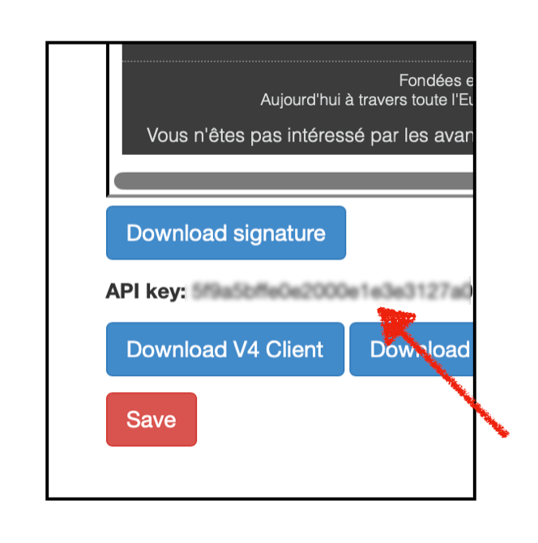

Download OmniReply
Click Download OmniReply above. The stable link always points to the newest available XPI after updates are published.
Thunderbird extension
Download OmniReply, install it in Thunderbird, then activate it with your V4 API key and your personal Cover Playground links.
Before you start: this page is for the internal self-distributed OmniReply build. Only install the XPI if you received this link from OmniScriptum.
Follow these steps once on each Thunderbird installation.
Click Download OmniReply above. The stable link always points to the newest available XPI after updates are published.
Open v4.vdm-vsg.de, go to Account, and look just below your signatures. Copy the API key.

xpinstall.signatures.required.Open the OmniReply extension settings, paste your V4 API key, and click Test connection.
Paste your personal Cover Playground link for each recognized imprint account. These links let OmniReply include your own submission link in generated replies.
You can edit the default voice settings manually. Learning from your sent folder is optional.